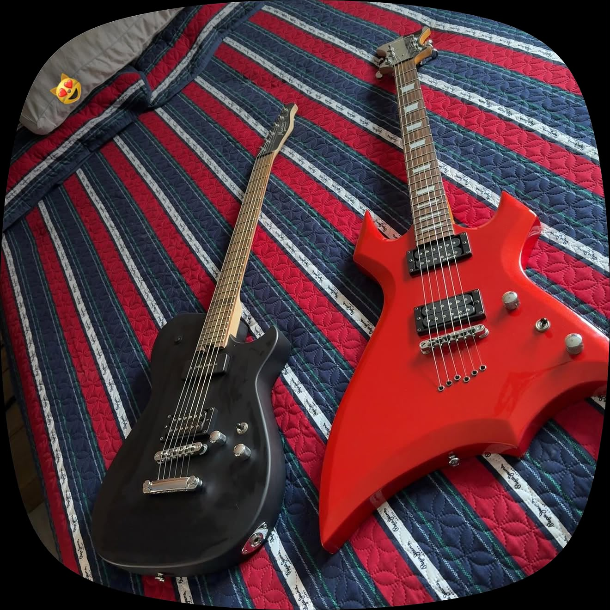

¿Qué encontrarás?
Modelos: guitarras de diferentes estilos y fabricantes.
Información: características generales, materiales y usos.
Proyecto escolar de HTML para el grupo 505.
Ian Rogelio Sánchez Martínez
Este sitio presenta diferentes tipos de guitarras eléctricas y acústicas. El proyecto fue realizado utilizando HTML y sus principales etiquetas, enlaces, listas, imágenes, tablas, multimedia, formularios y elementos semánticos.

Modelos: guitarras de diferentes estilos y fabricantes.
Información: características generales, materiales y usos.
Proyecto escolar de HTML para el grupo 505.
Este proyecto utiliza HTML sin un archivo CSS externo.
Contacto del proyecto:
ianrogelio10@gmail.com